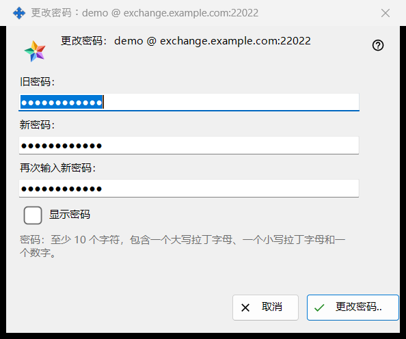
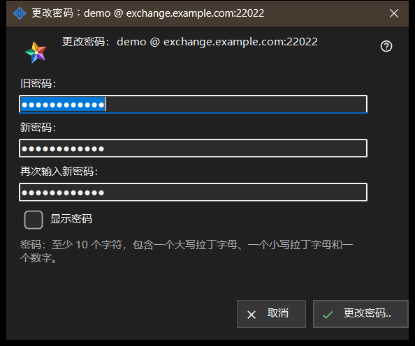

更改密码
用途说明
更改此电脑所登录的交换账户的密码。从 Share Manager 设置的「交换账户」组中的「更改密码..」打开，该按钮仅在账户已连接时显示。标题以「登录名 @ 服务器」的形式给出账户。窗口本身不发送任何内容：它检查你输入的内容并返回，由这台电脑的连接发送，最终由服务器说了算。


操作顺序
- 在 Share Manager 设置的「交换账户」组中点击「更改密码..」。
- 在「旧密码：」中输入旧密码。
- 在「新密码：」中输入新密码，并在「再次输入新密码：」中重复输入。
- 勾选「显示密码」以核对这三个字段。
- 点击「更改密码..」；如果出现警告行，请修改相应字段后再次点击。
- 阅读组中显示的结果。
界面元素
三个字段
旧密码、新密码和重复输入的新密码。三个字段都被遮蔽；一个「显示密码」勾选框可同时显示这三个字段，且不会被记住。窗口关闭时这些字段会被清空。
密码规则
字段下方的一行写道：密码：至少 10 个字符，包含一个大写拉丁字母、一个小写拉丁字母和一个数字。窗口会立即检查，因此在发送任何内容之前你就能得到结果。
警告行
按钮按以下顺序检查：请填写旧密码。然后：两个密码不一致。然后检查规则：密码少于 10 个字符。或：密码中没有大写拉丁字母。或：密码中没有小写拉丁字母。或：密码中没有数字。第一个问题就会中止检查，窗口保持打开，什么也不会发送。
点击之后会怎样
输入无误时窗口关闭，由该组显示结果。成功时：密码已更改。这台电脑继续工作，账户的其他设备必须重新登录。其他结果：旧密码不正确。/ 尝试次数过多。请等待一分钟后再试。/ 服务器拒绝了密码更改。/ 与服务器没有连接。请连接后重试。如果服务器拒绝了弱密码，则显示服务器自己的那句话。
取消与按键
「取消」或 Esc 会关闭窗口且不做任何更改；Enter 相当于点击「更改密码..」。